Fashion Through the Decades
Explore how American fashion evolved from the 1900s to present day, reflecting the changing social landscape, political movements, and cultural shifts of each era.
1900s: The Edwardian Era
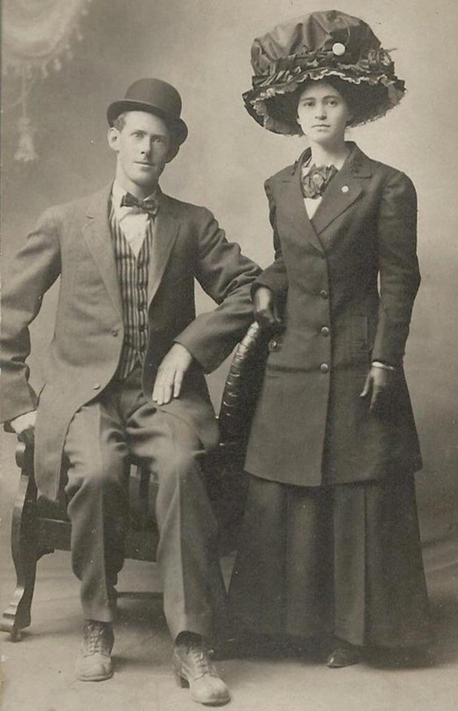
Key Trends
- S-curve silhouette with corsets pushing the bust forward and hips back
- Gibson Girl as the feminine ideal with pompadour hairstyles
- High collars, long skirts, and tailored suits for men
- Elaborate hats adorned with feathers, flowers, and sometimes entire birds
- Lingerie dresses in white cotton and lace for daytime wear
Social Impact
The 1900s fashion reflected the rigid class structure of American society. Clothing served as a clear indicator of social status, with the wealthy displaying their position through elaborate, impractical garments that required servants to help with dressing.
The Gibson Girl became the first nationally recognized feminine ideal, representing the new woman who was educated and independent while maintaining traditional feminine values. This image bridged Victorian restraint with the coming modern era.
For working-class Americans, clothing was more practical but still adhered to formal standards. Even factory workers wore suits and ties or long skirts to work, though made of cheaper materials and with less elaborate details than their wealthy counterparts.
The rise of department stores like Macy's and Marshall Field's democratized fashion, making ready-to-wear clothing more accessible to the middle class. Mail-order catalogs from Sears, Roebuck and Company brought fashion to rural America, narrowing the style gap between urban and rural populations.
Cultural Impact
The Edwardian era saw the beginning of mass production in clothing, making fashionable styles more accessible to the middle class. Department stores began to flourish, democratizing fashion in unprecedented ways.
Illustrations in magazines like Ladies' Home Journal and the Saturday Evening Post, particularly those by Charles Dana Gibson, heavily influenced American fashion ideals. These publications reached millions of homes, creating the first truly national fashion consciousness.
Leisure activities like bicycling and tennis influenced practical adaptations in fashion, with divided skirts and less restrictive garments slowly gaining acceptance for specific activities.
The Arts and Crafts movement influenced fashion through textiles and jewelry, promoting handcrafted items over mass-produced goods. This aesthetic would later evolve into Art Nouveau, with its flowing, organic lines appearing in fashion accessories and fabric patterns.
Political Impact
The women's suffrage movement gained momentum during this decade, and dress reform became intertwined with political activism. Suffragettes often deliberately adopted more practical clothing as a statement against restrictive female fashion.
The "Rational Dress Movement" advocated for clothing that allowed women greater freedom of movement, arguing that restrictive corsets and heavy skirts were harmful to women's health and symbolic of their oppression.
President Theodore Roosevelt's outdoor adventures and "strenuous life" philosophy influenced men's fashion, promoting more rugged, practical clothing for outdoor activities, challenging the formal Victorian ideals of masculinity.
Labor movements began to highlight the poor working conditions in garment factories. The International Ladies' Garment Workers' Union was formed in 1900, beginning the fight for better conditions in the clothing industry that would gain significant momentum after the Triangle Shirtwaist Factory fire in the next decade.
1910s: War and Revolution

Key Trends
- Slimmer silhouettes with raised hemlines (ankle-length by 1915)
- Decline of the corset and introduction of the brassiere
- Military influences in both men's and women's clothing
- Paul Poiret's "hobble skirt" and early Art Deco influences
- Orientalism inspired by Ballets Russes and Poiret's designs
Social Impact
World War I dramatically transformed women's roles in society, as they entered the workforce in unprecedented numbers. This necessitated more practical clothing, accelerating the move away from restrictive garments.
Class distinctions in clothing began to blur as wartime rationing affected all levels of society. Luxury fabrics became scarce, and ostentatious displays of wealth through clothing became socially unacceptable during the war years.
The decade saw the first significant influence of youth culture on fashion, as younger women began rejecting the formal styles of their mothers, setting the stage for the flapper revolution to come.
The introduction of Coco Chanel's designs featuring simple, comfortable clothing made from jersey (previously used only for men's underwear) represented a radical shift toward comfort and practicality in women's fashion that would define much of 20th-century style.
Cultural Impact
The Ballets Russes performances in America introduced exotic Eastern influences to fashion, with designer Paul Poiret bringing vibrant colors and harem pants to women's wardrobes.
Early Hollywood began to influence fashion, with silent film stars like Mary Pickford and Theda Bara becoming style icons whose looks were emulated by women across America.
The Art Deco movement emerged in this decade, bringing geometric patterns and streamlined designs that would fully blossom in 1920s fashion.
Ragtime and early jazz music influenced dance styles like the foxtrot, which in turn affected clothing design. Dresses became less restrictive to allow for new dance movements, with hemlines rising to prevent tripping during energetic dances.
Political Impact
The women's suffrage movement reached its peak, with white becoming the symbolic color of the movement. Suffragettes often wore white dresses during marches and demonstrations as a visual statement of their cause.
World War I led to government-mandated fabric rationing and style restrictions. The U.S. War Industries Board regulated the use of wool and other materials, limiting the width of skirts and number of pockets in garments.
Labor movements gained strength, with the tragic Triangle Shirtwaist Factory fire of 1911 highlighting the dangerous conditions of garment workers and leading to significant labor reforms in the industry.
The Russian Revolution of 1917 influenced avant-garde fashion, with constructivist designs emphasizing functionality and rejecting bourgeois ornamentation. While these radical designs had limited direct impact on mainstream American fashion, they influenced future modernist approaches to clothing design.
1920s: The Roaring Twenties
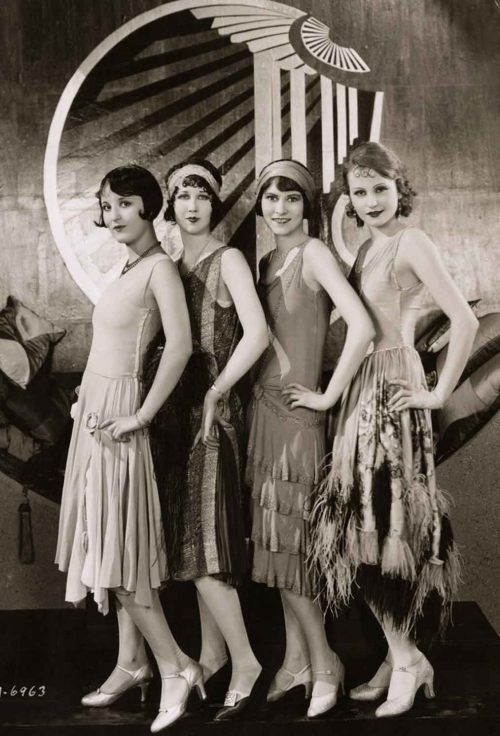
Key Trends
- Flapper style with dropped waistlines and knee-length hemlines
- Boyish silhouette with bound breasts and emphasis on a slim figure
- Cloche hats, bobbed hair, and heavy makeup
- Art Deco influences with geometric patterns and beaded embellishments
- Oxford bags and plus-fours for men's casual wear
Social Impact
The 1920s represented a dramatic break from tradition, with women gaining the right to vote and embracing unprecedented freedoms. The flapper embodied this new woman – independent, sexually liberated, and unbound by Victorian restraints.
Hemlines rose dramatically to the knee, shocking older generations and symbolizing women's liberation. Corsets were abandoned in favor of the boyish, flat-chested silhouette that defied traditional ideals of femininity.
Prohibition created speakeasy culture, where fashion became more risqué and experimental. Evening wear featured beading, fringe, and designs that looked spectacular while dancing the Charleston and other popular dances.
The automobile revolution changed dating culture and fashion, with couples able to escape chaperones. "Rumble seat" coats and motoring accessories became fashionable, while practical clothing for driving gained popularity among both men and women.
Cultural Impact
Jazz music profoundly influenced fashion, with loose-fitting clothes designed for new dance crazes. The term "flapper" itself referred to the unbuckled galoshes that would flap while dancing.
Hollywood's influence on fashion exploded, with stars like Clara Bow, Louise Brooks, and Rudolph Valentino setting trends that were copied nationwide. The "It Girl" concept was born, creating a new celebrity fashion culture.
The Harlem Renaissance brought African American culture into the mainstream, with jazz clubs influencing fashion across racial lines. Black performers like Josephine Baker became style icons for both Black and white Americans.
Mass production techniques improved dramatically, making fashionable clothing more affordable than ever before. Department stores expanded, and ready-to-wear fashion became the norm rather than the exception, democratizing style in unprecedented ways.
Political Impact
The passage of the 19th Amendment in 1920 giving women the right to vote coincided with radical changes in women's fashion. The new styles physically embodied women's political liberation.
Prohibition created a counterculture that expressed rebellion through fashion. Flask garters and other accessories designed to hide alcohol became popular fashion statements against government control.
Conservative politicians and religious leaders launched campaigns against the "immoral" flapper fashion, attempting to pass laws regulating skirt lengths and swimwear in some communities – efforts that largely failed.
The economic prosperity of the "Roaring Twenties" under Republican administrations promoted consumerism and fashion consumption. President Calvin Coolidge's declaration that "the business of America is business" reflected the decade's emphasis on consumption, including fashion purchases.
1930s: Depression Era Elegance

Key Trends
- Bias-cut gowns that skimmed the body's natural curves
- Return to longer hemlines and more feminine silhouettes
- Hollywood-inspired glamour despite economic hardship
- Broad shoulders and narrow waists for both men and women
- Practical daywear reflecting economic constraints
- Backless evening gowns and halter necklines
Social Impact
The Great Depression forced practical adaptations in fashion. Clothing was mended, remade, and worn until it was threadbare. "Make do and mend" became the mantra of the era, with women's magazines offering tips for updating old garments.
Despite economic hardship, people still aspired to elegance. The contrast between everyday reality and Hollywood fantasy created a unique fashion tension, with many Americans using small, affordable accessories to emulate screen stars.
Hand-me-downs became normalized across social classes, and clothing swaps became common social events. This democratization of fashion blurred some class distinctions that had been rigidly maintained in previous decades.
The feminine silhouette returned after the boyish look of the 1920s, perhaps reflecting a desire for traditional gender roles during economic uncertainty. Waistlines returned to their natural position, and curves were emphasized rather than minimized.
Cultural Impact
Hollywood provided much-needed escapism during the Depression. Films like "It Happened One Night" and "Top Hat" showcased glamorous fashions that influenced American style despite economic constraints.
Actresses like Jean Harlow, Greta Garbo, and Joan Crawford became style icons, with their on-screen wardrobes setting trends for evening wear, hairstyles, and makeup techniques.
The rise of backless evening gowns, popularized by stars like Harlow, represented a new form of sensuality that focused on unexpected glimpses of skin rather than the overt sexuality of the flapper era.
Synthetic fabrics like rayon (marketed as "artificial silk") became more common, making fashionable looks more affordable. These technological innovations would later prove crucial during wartime rationing in the 1940s.
Political Impact
The New Deal's Works Progress Administration included sewing projects that employed thousands of women to make clothing for relief distribution, standardizing certain styles among lower-income Americans.
First Lady Eleanor Roosevelt championed American designers and manufacturing, wearing domestically produced clothing to support the struggling industry and setting an example of practical yet dignified dressing.
As fascism rose in Europe, some American designers deliberately rejected European influences, promoting an "American Look" that emphasized practicality, comfort, and democratic values in contrast to the militaristic styles emerging overseas.
Labor activism in the garment industry reached new heights, with the International Ladies' Garment Workers' Union gaining strength and improving conditions for workers. The union's "Look for the Union Label" campaign began to make consumers aware of the labor conditions behind their clothing.
1940s: Wartime Utility and Post-War New Look
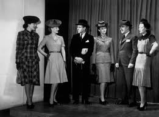
Key Trends
- Utility clothing with fabric rationing and practical designs
- Women in trousers and workwear for factory jobs
- Military-inspired details like shoulder pads and boxy silhouettes
- Dior's "New Look" with nipped waists and full skirts (post-1947)
- Shorter skirts conserving fabric during wartime
- Victory suits for men with narrow lapels and fewer pockets
Social Impact
World War II transformed gender roles as women entered the workforce in unprecedented numbers. "Rosie the Riveter" became an iconic image, with her practical workwear and bandana-wrapped hair representing women's contribution to the war effort.
Trousers became acceptable everyday wear for women for the first time, a practical necessity for factory work that would permanently change women's fashion. This shift represented one of the most significant gender-based fashion revolutions in modern history.
Rationing created a "make do and mend" culture, with clothing recycled and repurposed. Women's magazines featured tips for turning men's suits into women's outfits and extending the life of worn garments, promoting resourcefulness as patriotic.
The post-war "New Look" by Christian Dior represented a dramatic return to ultra-femininity and luxury after years of practical, masculine-influenced clothing. The controversial style was criticized as wasteful but reflected a deep desire to leave wartime austerity behind.
Cultural Impact
Hollywood continued to influence fashion, with stars like Rita Hayworth, Ingrid Bergman, and Katharine Hepburn setting trends. The film noir aesthetic popularized strong-shouldered suits for women and fedoras for men.
Swing music and jitterbug dancing influenced youth fashion, with young women wearing shorter, fuller skirts that allowed movement on the dance floor. Zoot suits, with their exaggerated proportions, became popular among young men, particularly in African American and Latino communities.
The bobby-soxer phenomenon emerged among teenage girls, who idolized Frank Sinatra and developed their own distinctive style with saddle shoes, ankle socks, pleated skirts, and sweaters. This represented one of the first distinct teenage fashion identities in American history.
American sportswear came into its own during this period, with designers like Claire McCardell creating versatile, practical clothing that could be mixed and matched. This distinctly American approach to fashion would influence global style for decades to come.
Political Impact
Government-mandated rationing directly shaped fashion during World War II. The War Production Board's L-85 regulations restricted the use of fabrics, eliminating cuffs, pleats, and patch pockets while limiting skirt circumference and jacket length.
Patriotic themes appeared in fashion, with red, white, and blue color schemes and military-inspired details. Jewelry featuring V for Victory symbols and other patriotic motifs became popular ways to show support for the war effort.
The zoot suit riots of 1943 highlighted racial tensions and the political dimensions of fashion. Young Mexican American men wearing zoot suits were attacked by servicemen who viewed the fabric-heavy garments as unpatriotic during rationing.
Post-war, the Cold War began to influence fashion, with American styles emphasizing prosperity and freedom in contrast to Soviet austerity. The "American Look" promoted by designers like Mainbocher and Norman Norell became part of America's cultural diplomacy.
1950s: Suburban Conformity and Youth Rebellion
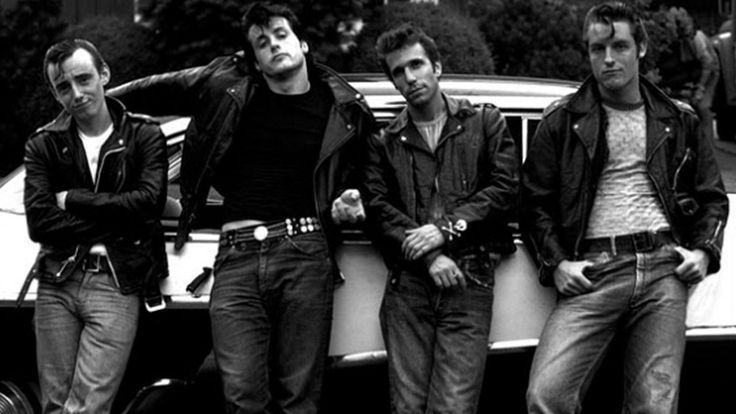
Key Trends
- Full skirts with petticoats and nipped waists for women
- Shirtwaist dresses for everyday suburban wear
- Greaser style with leather jackets and blue jeans for rebellious youth
- Preppy collegiate look with letterman sweaters and penny loafers
- Tailored suits with narrow lapels for men (the "gray flannel suit")
- Rockabilly fashion with poodle skirts and saddle shoes
Social Impact
The 1950s saw a return to traditional gender roles after the disruptions of war, with fashion reflecting and reinforcing these norms. Women's clothing emphasized femininity and domesticity with full skirts, while men's suits projected authority and conformity.
Suburban expansion created a new lifestyle centered around the home, with casual sportswear for backyard barbecues and housedresses for women's domestic duties. The shirtwaist dress became the uniform of the suburban housewife, practical yet feminine.
Youth culture emerged as a distinct social force with its own fashion identity. Teenagers had unprecedented disposable income and used clothing to distinguish themselves from their parents' generation, setting the stage for the youth-driven fashion revolutions of later decades.
Class and conformity were closely linked, with middle-class professionals expected to adhere to strict dress codes. The "Organization Man" in his gray flannel suit represented corporate conformity, while blue-collar workers maintained their own distinct style codes.
Cultural Impact
Rock and roll revolutionized youth fashion, with Elvis Presley's provocative style influencing young men to adopt pompadour hairstyles and more flamboyant clothing. The "greaser" look with leather jackets, white T-shirts, and jeans became symbolic of teenage rebellion.
Hollywood stars continued to shape fashion trends. Audrey Hepburn's elegant simplicity in "Roman Holiday" and "Sabrina" influenced women's fashion, while James Dean's rebellious look in "Rebel Without a Cause" became the template for teenage boys.
Television brought fashion into American homes in unprecedented ways. Shows like "I Love Lucy" and "Leave It to Beaver" normalized and promoted the idealized suburban wardrobe, while TV advertising created new desires for fashion products.
Beatnik culture emerged as an alternative to mainstream conformity, with black turtlenecks, berets, and dark sunglasses signaling intellectual and artistic rebellion. Though a small subculture, beatniks foreshadowed the countercultural movements that would transform fashion in the 1960s.
Political Impact
Cold War tensions influenced fashion, with American styles emphasizing prosperity and freedom in contrast to Communist austerity. Fashion became part of the ideological competition, with the American look representing the success of capitalism.
The Civil Rights Movement began to challenge racial segregation, with activists often adopting formal dress as a strategy. Well-dressed protesters highlighted the injustice of discrimination and countered negative stereotypes, using fashion as a form of political communication.
McCarthyism and the Red Scare promoted conformity in all aspects of life, including dress. Deviating from mainstream fashion could raise suspicions of un-American sympathies, reinforcing conservative dress codes in business and social settings.
First Lady Mamie Eisenhower influenced women's fashion with her preference for pink (leading to the popularity of "Mamie Pink") and her bangs hairstyle. Her middle-class style was more relatable than the aristocratic elegance of previous First Ladies, reflecting the Eisenhower era's celebration of middle-class values.
1960s: Youth Revolution and Counterculture
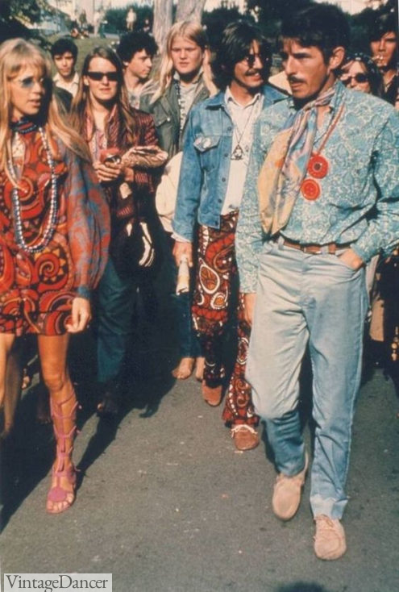
Key Trends
- Mod fashion with geometric patterns and mini skirts
- Hippie style with tie-dye, fringe, and ethnic-inspired designs
- Space Age fashion with futuristic materials and shapes
- Jackie Kennedy's pillbox hats and tailored suits
- Unisex clothing breaking down gender barriers
- Bold colors and psychedelic prints reflecting youth culture
Social Impact
The 1960s witnessed a dramatic generational divide expressed through fashion. Young people rejected the conformity of their parents' generation, using clothing as a visible statement of their different values and worldview.
The sexual revolution and women's liberation movement influenced fashion, with the miniskirt symbolizing women's sexual freedom and rejection of traditional modesty. Designer Mary Quant claimed the miniskirt "represented the liberation of women from rules and regulations."
Traditional gender distinctions in clothing began to blur, with unisex styles gaining popularity. Both men and women wore jeans, t-shirts, and longer hair, challenging established gender norms and reflecting changing social attitudes about gender roles.
The hippie movement rejected consumer culture and embraced handcrafted, ethnic, and vintage clothing. This "anti-fashion" approach represented a critique of mainstream materialism and promoted authenticity, individuality, and environmental consciousness.
Cultural Impact
British Invasion bands like The Beatles and The Rolling Stones had an enormous influence on fashion, with young Americans emulating their style. The Beatles' evolution from clean-cut suits to psychedelic and Eastern-influenced clothing mirrored broader cultural shifts.
Pop art influenced fashion with bold colors, geometric patterns, and playful designs. Andy Warhol's Factory scene blended art, music, and fashion, while designers like Paco Rabanne created garments that were wearable art pieces.
The space race inspired futuristic fashion, with designers like André Courrèges, Pierre Cardin, and Paco Rabanne creating Space Age looks featuring vinyl, plastic, and metallic materials in geometric shapes. These designs reflected the era's technological optimism.
Television shows like "Rowan & Martin's Laugh-In" and "The Mod Squad" popularized youth fashion trends, while fashion magazines became more experimental. Diana Vreeland's tenure at Vogue (1963-1971) transformed the magazine into a showcase for the decade's most innovative styles.
Political Impact
The Civil Rights Movement influenced Black fashion and identity, with the "Black is Beautiful" movement celebrating natural hairstyles like the Afro as expressions of racial pride and rejection of white beauty standards. Organizations like the Black Panthers developed distinctive uniform-like styles that expressed solidarity and militancy.
Anti-war protesters used fashion to express their opposition to the Vietnam War, with peace symbols, military jackets repurposed with anti-war messages, and long hair for men all becoming visual symbols of resistance to government policies.
First Lady Jacqueline Kennedy had an unprecedented influence on American women's fashion, with her elegant, European-influenced style setting trends nationwide. Her preference for French designers, particularly Oleg Cassini, elevated fashion to a component of the Kennedy administration's sophisticated image.
The counterculture's adoption of non-Western clothing styles—from Indian fabrics to Native American motifs—reflected both a rejection of Western materialism and a problematic appropriation of other cultures. This tension between appreciation and appropriation continues to influence fashion politics today.
1970s: Disco, Glam, and Individuality
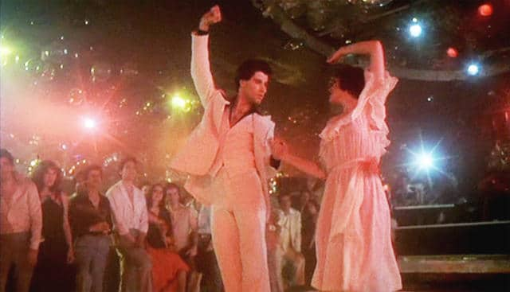
Key Trends
- Disco fashion with platform shoes, sequins, and spandex
- Bell-bottom pants and wide-collar shirts
- Bohemian/hippie style with maxi dresses and ethnic prints
- Glam rock with glitter, platform boots, and androgynous styling
- Diane von Furstenberg's wrap dress for working women
- Earth tones and natural fabrics reflecting environmental awareness
Social Impact
The 1970s embraced individual expression over conformity, with a diverse range of styles coexisting. The "anything goes" approach to fashion reflected broader social changes, including the sexual revolution, women's liberation, and increasing acceptance of diverse lifestyles.
Women's growing presence in the workforce influenced fashion, with designers creating clothes suitable for the office while maintaining femininity. Diane von Furstenberg's wrap dress, introduced in 1974, became an icon of female empowerment, combining professional appropriateness with comfort and style.
Disco culture created spaces where diverse groups—including racial minorities and LGBTQ+ communities—could express themselves through fashion and dance. The flamboyant styles associated with disco represented a celebration of previously marginalized identities.
Economic recession and energy crises in the mid-1970s influenced fashion, with layering becoming both stylish and practical for conserving energy in cooler homes and offices. The decade's later years saw a turn toward more conservative styles, foreshadowing the 1980s reaction against 1960s and early 1970s excesses.
Cultural Impact
Music scenes spawned distinct fashion subcultures. Disco demanded glamorous, body-conscious clothing for dancing, while punk (emerging late in the decade) rejected mainstream fashion with deliberately torn clothing, safety pins, and provocative imagery.
Films like "Saturday Night Fever" (1977) popularized disco fashion, while "Annie Hall" (1977) launched a trend for women wearing menswear-inspired clothing. These influential movies demonstrated cinema's power to launch fashion trends almost overnight.
Television shows like "Charlie's Angels" showcased fashionable, independent women, while "The Brady Bunch" influenced children's and teen fashion. The decade also saw the rise of fashion-focused TV shows like "Soul Train," which showcased Black fashion and dance.
Sportswear became fashionable everyday wear, with jogging suits, tennis clothes, and athletic shoes worn beyond the gym. This trend reflected the decade's fitness boom and growing casualization of American dress, a trend that would continue into future decades.
Political Impact
The feminist movement influenced fashion, with women rejecting clothing that objectified or restricted them. The pantsuit became a symbol of female empowerment and equality, though women wearing pants in professional settings still faced resistance in many workplaces.
Environmental consciousness grew throughout the decade, influencing a preference for natural fabrics and earth tones. Handcrafted clothing, natural dyes, and recycled garments reflected growing awareness of environmental issues and rejection of synthetic materials.
The Black Power movement continued to influence African American fashion, with afros, dashikis, and African-inspired jewelry expressing cultural pride and political consciousness. These styles represented a reclaiming of heritage and rejection of Eurocentric beauty standards.
The Vietnam War's end and Watergate scandal created disillusionment with authority, reflected in fashion that rejected formality and tradition. Anti-establishment attitudes permeated youth culture, with casual, individualistic styles replacing the more idealistic and unified looks of the 1960s counterculture.
1980s: Power Dressing and Excess
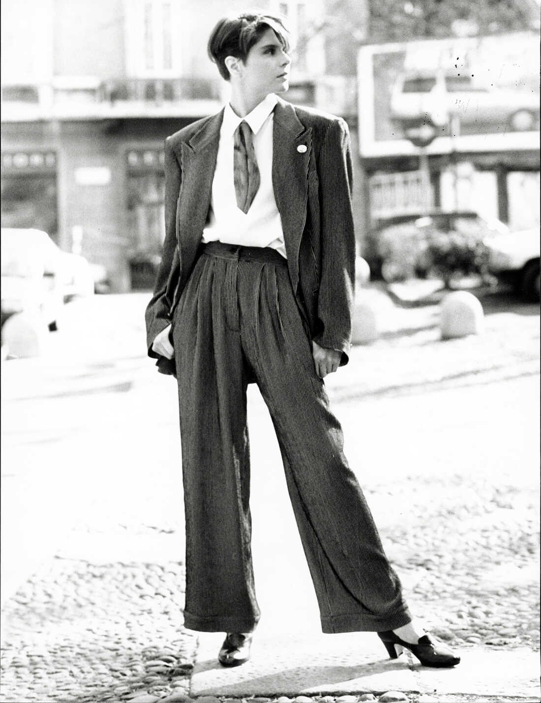
Key Trends
- Power suits with exaggerated shoulder pads
- Designer labels and status fashion (Gucci, Versace, Armani)
- Madonna-inspired looks with lace, crucifixes, and visible lingerie
- Hip-hop fashion with tracksuits, sneakers, and gold chains
- Punk and New Wave styles with mohawks and neon colors
- Preppy style with polo shirts, loafers, and pastel colors
Social Impact
The 1980s celebrated wealth and status, with designer labels and luxury goods becoming important social signifiers. The "yuppie" (young urban professional) emerged as a social archetype, with expensive suits and status accessories reflecting the decade's materialism.
Women's increasing presence in corporate America influenced the rise of power dressing. Shoulder pads and tailored suits created an authoritative silhouette that helped women navigate male-dominated workplaces, visually claiming space and power.
The AIDS crisis affected fashion, particularly in the gay community, with activist groups like ACT UP using clothing and accessories (especially the pink triangle and red ribbon) to raise awareness. The crisis also cast a shadow over the decade's sexual expression in fashion.
Fitness and body consciousness reached new heights, influencing form-fitting styles like bodysuits, leggings, and revealing athleticwear. Jane Fonda's workout videos popularized legwarmers and leotards, while bodybuilding culture promoted a muscular ideal for men.
Cultural Impact
MTV revolutionized fashion by bringing music videos into American homes 24 hours a day. Artists like Madonna, Michael Jackson, and Prince became style icons whose influence extended far beyond music, using fashion as a crucial part of their artistic expression.
Hip-hop culture emerged as a major fashion influence, with Run-DMC's Adidas tracksuits, gold chains, and unlaced sneakers bringing urban Black style into the mainstream. The 1986 hit "My Adidas" even led to the first endorsement deal between a hip-hop group and a major clothing company.
Japanese designers like Rei Kawakubo (Comme des Garçons), Issey Miyake, and Yohji Yamamoto brought avant-garde approaches to Western fashion, challenging conventional ideas about clothing with oversized, asymmetrical, and deconstructed garments.
Television shows like "Dynasty" and "Dallas" showcased luxury fashion and influenced mainstream style. Joan Collins' character Alexis Carrington became particularly influential with her power suits, dramatic jewelry, and glamorous evening wear epitomizing 1980s excess.
Political Impact
The Reagan era's conservative politics and celebration of wealth influenced fashion's turn toward conspicuous consumption and traditional gender presentation. Designer Ralph Lauren's success embodied this return to traditional Americana and aspirational luxury.
British Prime Minister Margaret Thatcher's style influenced professional women worldwide. Her perfectly coiffed hair, pussy-bow blouses, and structured handbags created a template for conservative female power dressing that many professional women adopted.
Punk fashion evolved from its 1970s origins into a more political statement against Reaganomics and Thatcherism. Bands like The Clash incorporated military surplus clothing and political slogans into their look, while hardcore punk adopted a deliberately anti-fashion stance.
First Lady Nancy Reagan's expensive designer wardrobe generated controversy during a time of economic recession, highlighting tensions around wealth inequality. Her preference for red ("Reagan Red") became her signature, symbolizing power, confidence, and Republican values.
1990s: Grunge, Minimalism, and Hip-Hop Influence
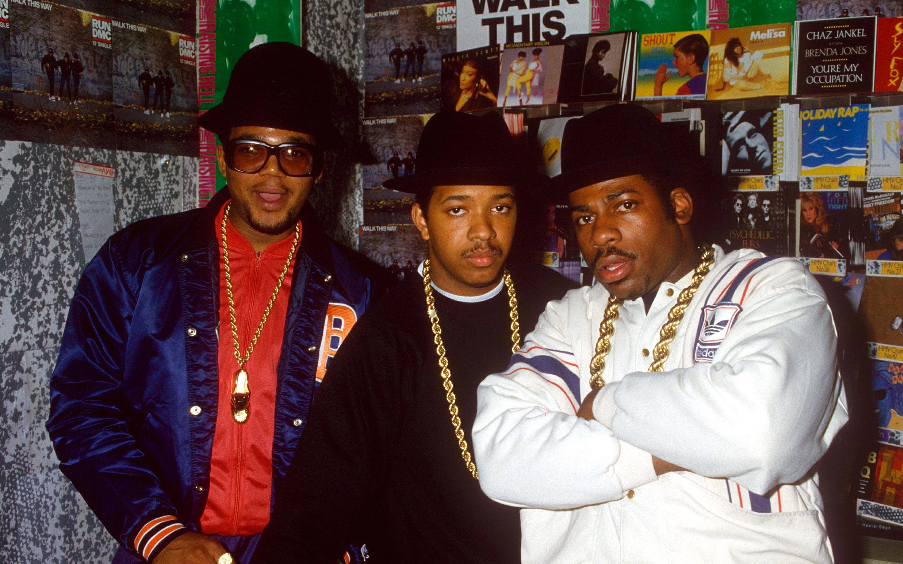
Key Trends
- Grunge with flannel shirts, ripped jeans, and Doc Martens
- Minimalist fashion with clean lines and neutral colors
- Hip-hop style with baggy jeans, sports jerseys, and Timberland boots
- Slip dresses and spaghetti straps for women
- Platform shoes, chokers, and baby tees
- Androgynous Calvin Klein aesthetic
Social Impact
The 1990s reacted against the excesses of the 1980s, with grunge fashion deliberately rejecting materialism and status symbols. Thrift store clothing, deliberately distressed items, and an anti-fashion attitude reflected Generation X's disillusionment with consumer culture.
The rise of the internet and dot-com boom created new dress codes, with tech companies pioneering casual workplace attire. "Casual Friday" became widespread in corporate America, gradually eroding formal business dress requirements across industries.
Body image concerns intensified with the "heroin chic" aesthetic popularized by models like Kate Moss. The waif-like, androgynous look contrasted sharply with the athletic, curvy ideal of the 1980s, raising concerns about unhealthy beauty standards.
Hip-hop fashion moved from urban communities to suburban malls, with brands like FUBU ("For Us, By Us") creating clothing specifically for African American consumers while also finding crossover success. This mainstreaming of Black style represented both cultural recognition and commercial co-optation.
Cultural Impact
Music continued to drive fashion trends, with grunge bands like Nirvana and Pearl Jam inspiring a disheveled aesthetic that rejected the polished looks of the 1980s. Kurt Cobain's thrift store cardigans, ripped jeans, and Converse sneakers became iconic symbols of 1990s youth culture.
Minimalism dominated high fashion, with designers like Calvin Klein, Jil Sander, and Helmut Lang creating streamlined, understated clothing in neutral colors. This aesthetic reflected both a reaction against 1980s excess and the influence of contemporary art and architecture.
Television shows like "Friends" and "Beverly Hills, 90210" had enormous influence on young people's fashion choices. Jennifer Aniston's "Rachel" haircut became one of the most requested styles of the decade, while the cast of "Friends" popularized casual, accessible fashion.
Supermodels reached unprecedented fame, becoming celebrities in their own right. The "Big Six" (Naomi Campbell, Cindy Crawford, Linda Evangelista, Christy Turlington, Claudia Schiffer, and Kate Moss) appeared on magazine covers, in music videos, and in advertising campaigns, wielding influence beyond the fashion world.
Political Impact
Environmental concerns influenced fashion, with eco-friendly materials and anti-fur activism gaining momentum. Designers like Katharine Hamnett used slogan t-shirts to promote political messages, while companies like Patagonia built their brand around environmental responsibility.
The Clinton administration brought a more casual approach to political dress, with Bill Clinton often appearing in casual attire and jogging clothes. This informality reflected the administration's desire to appear accessible and in touch with ordinary Americans.
LGBTQ+ visibility increased, influencing mainstream fashion with more gender-fluid options. The "unisex" aesthetic promoted by Calvin Klein and the androgynous look of grunge represented a blurring of traditional gender boundaries in fashion.
Globalization of the fashion industry accelerated, raising concerns about sweatshop labor. Anti-sweatshop activism targeted major brands like Nike and Gap, increasing consumer awareness about the ethical implications of fashion production and consumption.
2000s: Y2K, Celebrity Culture, and Fast Fashion
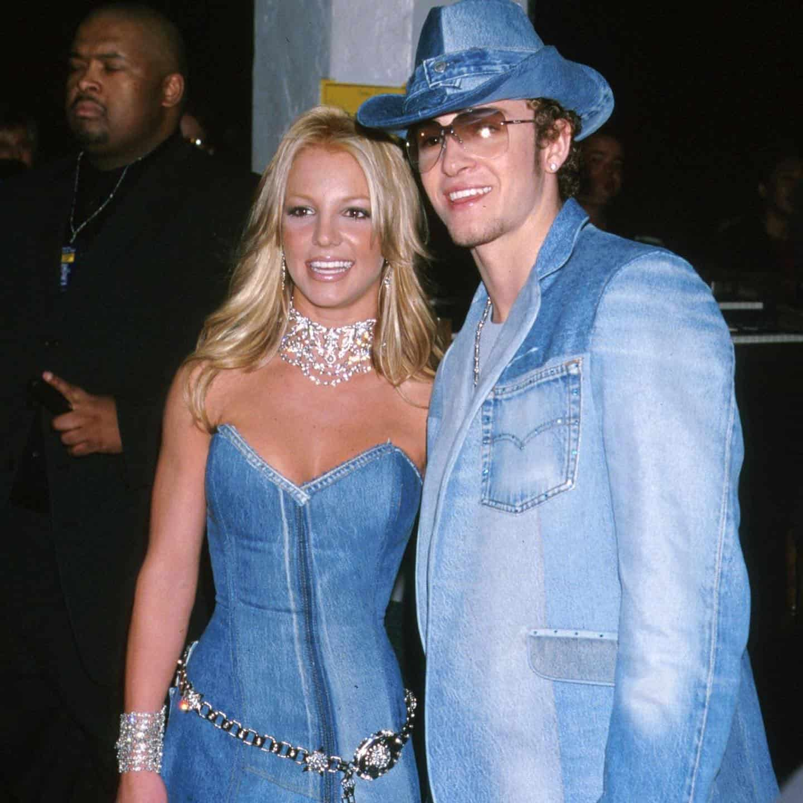
Key Trends
- Low-rise jeans and visible thongs ("whale tails")
- Juicy Couture velour tracksuits
- Von Dutch trucker hats and Ed Hardy graphic designs
- Ugg boots paired with mini skirts
- Blingy accessories and logomania
- Boho-chic with peasant tops and layered skirts
Social Impact
The 2000s saw the rise of celebrity fashion influence, with paparazzi photos of stars like Paris Hilton, Lindsay Lohan, and Britney Spears driving trends. "Tabloid culture" created a new fashion ecosystem where celebrity street style became as influential as runway shows.
Fast fashion exploded with retailers like H&M, Zara, and Forever 21 bringing runway trends to mass market at unprecedented speed and low prices. This democratized fashion but raised concerns about sustainability and labor practices.
Social class was expressed through visible logos and designer items, with conspicuous consumption returning after the more subdued 1990s. Status bags like the Fendi Baguette, Dior Saddle Bag, and Louis Vuitton Multicolore became must-have accessories signaling wealth and fashion knowledge.
Body exposure reached new extremes with low-rise jeans, crop tops, and visible underwear becoming mainstream. This hypersexualized aesthetic, particularly for young women, generated controversy and eventually a backlash that would influence the more covered-up styles of the 2010s.
Cultural Impact
Reality TV transformed fashion influence, with shows like "The Simple Life" and "Laguna Beach" showcasing the style of wealthy young people. "Project Runway," launched in 2004, brought fashion design into American living rooms, educating viewers about the creative process.
Hip-hop fashion continued to influence mainstream style, with artists like Jay-Z and P. Diddy launching successful clothing lines. Oversized white t-shirts, baggy jeans, and bling represented urban style, while artists like Pharrell Williams and Kanye West began pushing hip-hop fashion in more eclectic directions.
Boho-chic, popularized by celebrities like Mary-Kate and Ashley Olsen and Sienna Miller, offered an alternative to the blingy Y2K aesthetic. This style drew from 1960s hippie fashion, global influences, and vintage elements, creating a more romantic, layered look.
The rise of fashion blogs democratized fashion commentary, with sites like The Sartorialist and Style Rookie giving platforms to new voices outside traditional fashion media. This foreshadowed social media's later transformation of fashion influence.
Political Impact
Post-9/11 patriotism influenced fashion, with American flag motifs appearing on clothing and accessories. Military-inspired fashion gained popularity, reflecting the nation's wartime footing and honoring those serving in Iraq and Afghanistan.
The economic recession of 2008 affected fashion, with "recession-chic" emphasizing value and versatility. As the decade ended, conspicuous consumption became less socially acceptable, setting the stage for the more minimalist aesthetic of the early 2010s.
Discussions about cultural appropriation began to gain traction, with controversies over non-Native people wearing Native American headdresses and other culturally significant items as fashion. These debates foreshadowed more widespread conversations about fashion and cultural sensitivity in the 2010s.
The 2008 election of Barack Obama influenced men's style, with his well-tailored suits and business casual looks setting a new standard for modern professional dress. Michelle Obama's fashion choices would become even more influential in the following decade.
2010s: Social Media, Athleisure, and Inclusivity
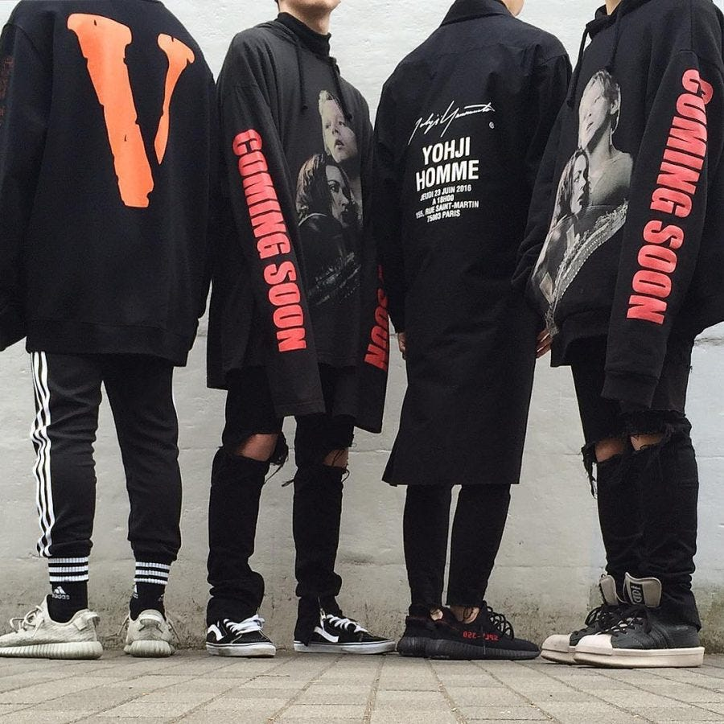
Key Trends
- Athleisure with leggings, sneakers, and activewear as everyday clothing
- High-waisted jeans and crop tops
- Minimalist aesthetic with neutral colors and clean lines
- Normcore and "ugly" fashion (chunky sneakers, dad shoes)
- Streetwear going mainstream (Supreme, Off-White, Yeezy)
- Gender-fluid fashion breaking traditional boundaries
Social Impact
Social media transformed fashion influence, with Instagram becoming a crucial platform for brands and influencers. The "Instagram aesthetic" favored photogenic, bold looks, while influencers replaced traditional fashion authorities as taste-makers for many consumers.
Body positivity and size inclusivity gained momentum, challenging the fashion industry's narrow beauty standards. Plus-size models like Ashley Graham achieved mainstream success, while brands faced increasing pressure to expand size ranges and feature diverse body types.
Athleisure reflected changing work patterns and wellness culture, with comfortable, versatile clothing suited to flexible lifestyles. The blending of athletic and casual wear erased traditional boundaries between different clothing categories, prioritizing comfort and functionality.
Sustainability became a mainstream concern, with consumers increasingly aware of fashion's environmental impact. Brands responded with eco-friendly materials, transparent supply chains, and circular business models, though "greenwashing" remained a problem.
Cultural Impact
Streetwear transformed luxury fashion, with brands like Supreme and Off-White bringing street culture aesthetics to high fashion. The appointment of Virgil Abloh as men's artistic director at Louis Vuitton in 2018 symbolized this shift, breaking barriers for Black designers and streetwear influence.
K-pop and Korean fashion gained global influence, with bands like BTS setting trends worldwide. Korean beauty standards and aesthetics influenced Western fashion, representing a significant shift in global cultural influence from West to East.
Normcore and "ugly" fashion challenged conventional beauty standards, with deliberately unflattering items like chunky sneakers, fanny packs, and oversized silhouettes becoming trendy. This ironic approach to fashion reflected millennial and Gen Z humor and rejection of traditional status symbols.
Digital fashion emerged with virtual clothing for social media, gaming skins, and early experiments with NFTs. This development questioned the nature of clothing itself, suggesting a future where digital fashion might be as valuable and meaningful as physical garments.
Political Impact
Fashion became more explicitly political, with slogan t-shirts and accessories expressing views on feminism, racial justice, and LGBTQ+ rights. The pink "pussy hat" of the 2017 Women's March became an iconic symbol of resistance to the Trump administration.
Cultural appropriation debates intensified, with designers and brands facing backlash for insensitive use of cultural elements. These controversies forced the fashion industry to reckon with its history of exploitation and led to more thoughtful approaches to cultural exchange.
First Lady Michelle Obama used fashion diplomatically, supporting American designers, especially emerging talents and designers of color. Her accessible style mixing high-end pieces with items from mainstream retailers like J.Crew democratized fashion and emphasized substance over flash.
The #MeToo movement influenced fashion, with red carpet events becoming platforms for political statements. The 2018 Golden Globes "blackout," where attendees wore black in solidarity with sexual assault survivors, demonstrated fashion's power as a tool for collective political expression.
2020s: Pandemic Disruption and Digital Transformation
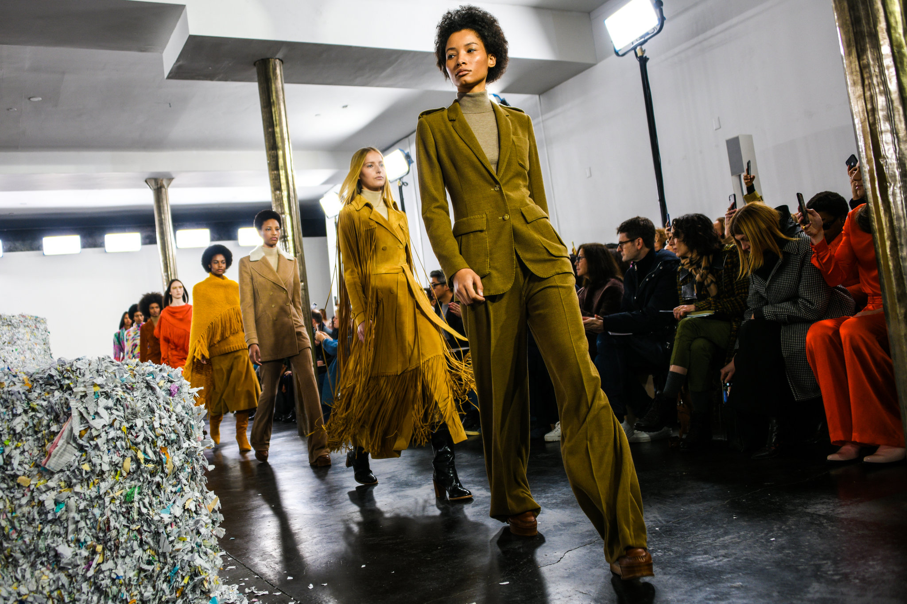
Key Trends
- Pandemic fashion with masks, loungewear, and "waist-up" dressing
- Y2K revival with low-rise jeans and early 2000s nostalgia
- Sustainable and ethical fashion gaining mainstream traction
- Gender-fluid designs from mainstream brands
- Digital fashion, NFTs, and metaverse clothing
- Cottagecore, Dark Academia, and other aesthetic-based microtrends
Social Impact
The COVID-19 pandemic radically transformed fashion, with lockdowns making comfort paramount and masks becoming essential accessories. Remote work created "waist-up" dressing for video calls, while loungewear and athleisure dominated as boundaries between home and work blurred.
Secondhand and vintage shopping accelerated, with platforms like Depop, ThredUp, and Poshmark growing rapidly. This shift reflected both sustainability concerns and economic pressures, challenging the primacy of new clothing purchases.
The pandemic accelerated the digital transformation of fashion, with virtual fashion shows, digital clothing, and metaverse fashion becoming more mainstream. These innovations questioned traditional fashion cycles and the necessity of physical garments.
Social media platforms, particularly TikTok, accelerated trend cycles to unprecedented speeds. Microtrends emerged and disappeared within weeks, creating a fragmented fashion landscape where multiple aesthetics coexisted rather than a single dominant style.
Cultural Impact
Nostalgia dominated with Y2K revival bringing back early 2000s styles like low-rise jeans, baby tees, and blingy accessories. This trend, driven by Gen Z discovering styles they were too young to experience the first time, demonstrated fashion's cyclical nature.
Aesthetic-based fashion communities flourished online, with styles like Cottagecore, Dark Academia, and Goblincore allowing people to express specific identities and interests through clothing. These internet-driven aesthetics created new forms of fashion tribalism.
Celebrities and influencers launched successful fashion brands, with Rihanna's Savage X Fenty revolutionizing the lingerie industry through inclusive sizing and diverse representation. The line between designer, influencer, and celebrity continued to blur.
The boundaries between high fashion and streetwear collapsed completely, with luxury houses embracing casual styles and collaborations. Limited edition "drops" replaced traditional seasonal releases for many brands, adopting the scarcity model pioneered by streetwear.
Political Impact
The Black Lives Matter movement pushed the fashion industry to address systemic racism, with increased support for Black-owned brands and more diverse representation. The 15 Percent Pledge, started by Aurora James, called for retailers to dedicate 15% of shelf space to Black-owned businesses.
Sustainability moved from marketing point to business imperative, with legislation in Europe and consumer pressure pushing brands toward more environmentally responsible practices. Concepts like circular fashion, rental, and resale gained momentum as alternatives to traditional consumption.
Gender-fluid fashion moved from niche to mainstream, with major retailers creating unisex collections and fashion weeks increasingly combining men's and women's shows. This shift reflected broader social acceptance of gender diversity and rejection of binary gender categories.
Fashion masks became political statements during the pandemic, with designs expressing everything from support for essential workers to political affiliations. The politicization of masks highlighted fashion's role in expressing values and identity during crisis.